일정을 만들고, 지키고, 고치는 에이전트 OS
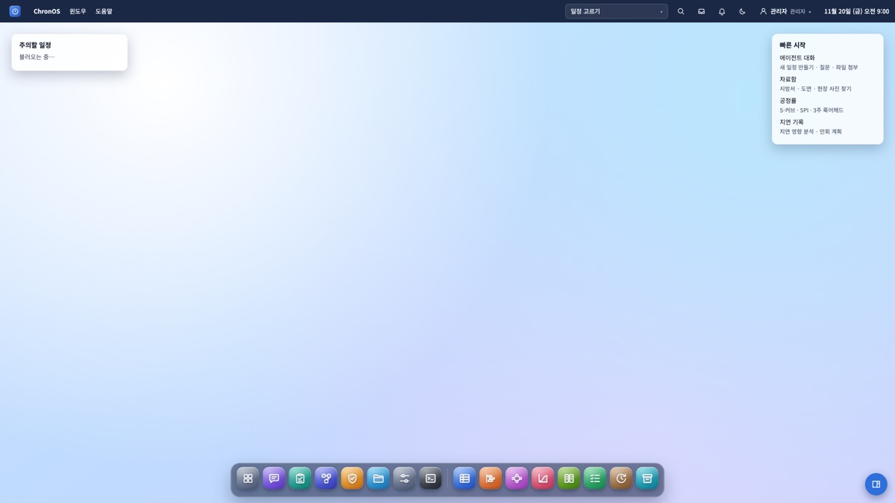
Executive Summary
현장의 일정은 매일 바뀝니다.
ChronOS는 바뀐 현장을 10분 안에 다시 계산하고, 근거를 붙여, 사람이 바로 결정하게 만드는 일정 관리 OS입니다.
15년간 대형 건설·플랜트 현장에서 공정표를 두고 매일 의사결정을 해 왔습니다. 공정표는 처음 만들 때보다 현장이 틀어져 고칠 때 훨씬 큰 비용이 듭니다. 그래서 날짜 계산은 코드에, 판단과 조사는 Liner AI에, 최종 결정은 사람에게 맡기는 도구를 대회 기간에 처음부터 새로 만들었습니다.
• P6는 무겁고 비싸며, 엑셀은 계산이 안 되고, 일반 AI 챗봇은 날짜와 여유(Float)를 틀립니다.
Table of Contents
현장의 문제에서 출발해 설계 철학, 작동 원리, 실제 화면, Liner API 활용, 현장 효과까지 순서대로 담았습니다.
Chapter 1-1 · Before ChronOS
건설·플랜트·생산 현장의 스케줄은 책상 위 계획대로 흘러가지 않습니다. 비가 오고, 자재가 늦고, 장비가 겹치고, 발주처가 마일스톤을 당기는 일이 하루에도 수십 번 반복됩니다.
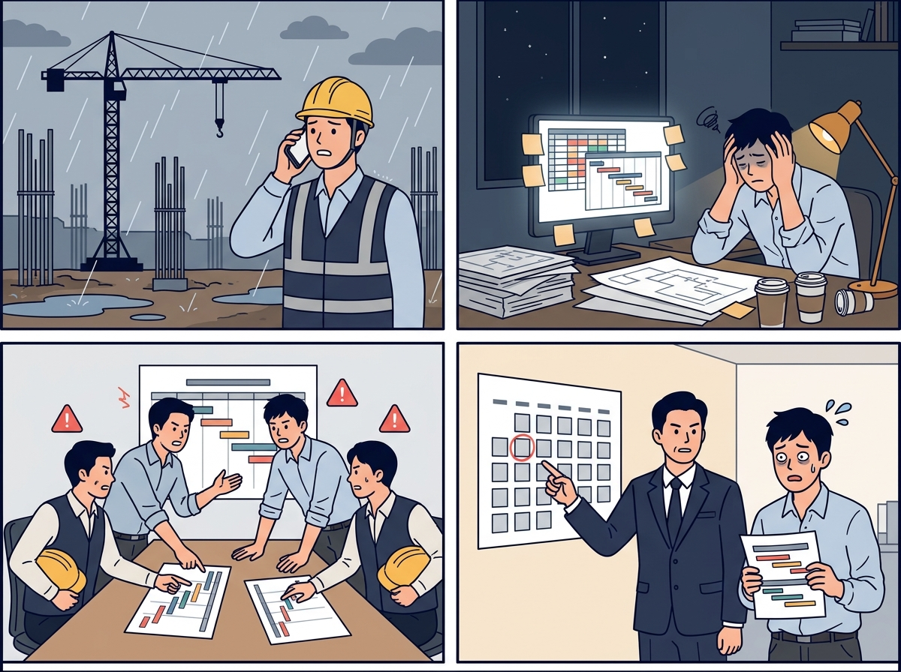
날씨·법규·타워크레인 대수·선후행(FS/SS/FF/SF)·여유(Float)·크리티컬 패스·납기를 매번 동시에 맞춰야 합니다.
반나절~밤샘으로 만회 계획을 세워도 다음 날 현장에서 또 변수가 터져 처음부터 다시 계산합니다.
시방서·회의록·현장 사진과 공정표가 단절되어 있어, 왜 이 날짜가 바뀌었는지 근거를 찾고 승인받는 데 며칠이 듭니다.
Chapter 1-2 · Real Field Experience
이 문제는 이론이 아닙니다. 4,200억~3조 원 규모의 국내외 건설·플랜트 프로젝트를 15년간 총괄·수행하며 매주 반복해서 겪은 가장 뼈아픈 현장 병목입니다.
| 역할 | 현장에서 매일 하는 일 | 실제 겪는 병목과 시간 손실 |
|---|---|---|
| 공정 담당 Planner |
• 주간 진도(Actual) 갱신 • 지연 시 만회 계획 수립 • 협력사 엑셀 공정표 취합 |
• 진도 5% 밀리면 크리티컬 패스·자원 겹침 수작업 재계산에 반나절~밤샘 • 협력사별 제각각인 엑셀 공정표 검토·빈 칸 확인·수기 입력에 건당 2~3시간 |
| PM Decision Maker |
• 지연 원인·책임 귀속 파악 • 발주처 보고 및 마일스톤 협의 • 주요 일정 변경 최종 승인 |
• 발주처의 마일스톤 단축 요구 시 자원·선후행 연쇄 영향 검토에 하루 이상 • 법규·시방서·계약 조건 근거 취합 및 공종별 검토 협의에 매주 수 시간~며칠 |
| 현장소장 Field Lead |
• 3주 룩어헤드(Lookahead) 점검 • 일일 자재·장비·인력 투입 • 우천·돌발 지연 상황 보고 |
• 사무실 공정표와 현장 사진·구두 보고가 단절되어 매주 2시간+ 수기 반영 • 이동 중·현장 밖에서는 무거운 공정 프로그램을 열 수 없어 의사결정 지연 |
| 반복되는 현장 업무 | 기존 소요 시간 | 병목의 근본 원인 |
|---|---|---|
| 진도 5% 지연 시 만회 계획 수립 | 반나절 ~ 밤샘 | 병행(Fast-track)·압축(Crashing)·장비 추가 대안을 일일이 수동 시뮬레이션 |
| 발주처 마일스톤·조건 변경 대응 | 1일 (8시간+) | 타워크레인·인력 등 자원 겹침과 후행 공종 연쇄 밀림을 즉시 볼 수 없음 |
| 공종별 전문가 검토·협의 및 보고 | 수 시간 ~ 며칠 | 회의록·시방서·법규·날씨 근거가 흩어져 있어 변경 이유 설명과 합의가 어려움 |
| 협력사 엑셀 공정표 취합·검증 | 건당 2 ~ 3시간 | 열 이름·단위·빈 칸이 제각각이라 사람이 눈으로 확인하고 수기 변환 |
공정표의 준공일·여유(Float)·크리티컬 패스는 계약과 지체상금이 걸린 숫자입니다. "대충 그럴듯한 AI 답변"은 현장에서 단 1%도 쓸 수 없습니다.
장비 겹침 조정, 동절기 타설 금지, 만회안 우선순위 같은 15년차 PM의 판단 기준은 프로젝트가 끝나면 흩어집니다. 이것을 시스템에 쌓아야 합니다.
Chapter 1-3 · Market & Tech Gap
현장은 이미 Primavera P6, MS Project, 엑셀, 그리고 최신 ChatGPT·Claude 같은 범용 AI를 써보았습니다. 하지만 세 가지 모두 치명적인 구조적 빈틈이 있습니다.
| 비교 기준 | 전문 공정 SW (Primavera P6 등) |
엑셀 공정표 (일반·중소 현장) |
범용 AI 챗봇 (ChatGPT · Claude 등) |
ChronOS (에이전트 OS) |
|---|---|---|---|---|
| 시작 · 조작 | ✕고가 · 전문가 전용 배우기 어렵고 무거움 |
△익숙하나 수작업 칸마다 사람이 직접 입력 |
✓대화 시작 쉬움 채팅창 하나에 갇힘 |
✓대화 한 줄 + 질문지 PC 다중 창 + 현장 모바일 앱 |
| CPM · 자원 계산 | △정확하나 수동 조건 바뀔 때마다 재입력 |
✕계산 기능 없음 사람이 눈으로 계산 |
✕날짜·여유 틀림 공정표 넣으면 깨짐 |
✓1초 계산 · 오차 0% 코드 계산기 전담 · LLM 날짜 폐기 |
| 지연 · 만회안 | ✕직접 대안 작성 여러 안 비교가 번거로움 |
✕밤샘 수작업 연쇄 밀림 추적 불가 |
✕말로만 제안 실제 공기 단축 검증 불가 |
✓1초 탐색 · 같은 차트 비교 코드가 찾고 Liner AI가 추천 |
| 문서 · 근거 연동 | ✕시방서·법규 단절 파일은 별도 폴더 관리 |
✕파일 따로 돎 사진·회의록 연결 안 됨 |
✕출처 불명 · 휘발 창 닫으면 맥락 사라짐 |
✓자료함 · 법규 · 날씨 연결 5축 Qdrant + Search/MCP·기상청 |
| 변경 통제 · 축적 | △승인 흐름 없음 변경 사유·판단 기록 부재 |
✕파일명 버전 혼란 v1_최종_진짜최종.xlsx |
✕승인 · 롤백 없음 이전 상태로 못 되돌림 |
✓승인함 · 롤백 · 스킬 저장 9종 사유 통제 + 노하우 재실행 |
Liner liner-mark(105만 토큰)와 난이도별 모델 분배 덕분에 두꺼운 시방서·공정표를 한 번에 읽으면서도 호출 비용을 조절할 수 있습니다.
AI가 감으로 답하지 않고 CPM 계산기·Qdrant 자료함·Liner Search/MCP·기상청 API를 직접 불러 근거 있는 결과만 내놓습니다.
공정 업무는 글 몇 줄로 끝나지 않습니다. 간트·비교판·조건·승인함이 한 화면에서 서로 맞물려 돌아가야 현장에서 바로 씁니다.
Chapter 2-1 · After ChronOS
같은 비, 같은 3일 지연이 발생해도 ChronOS가 있으면 현장의 하루는 완전히 달라집니다. 현장 보고부터 코드 계산, 만회안 비교, 1클릭 승인, 그리고 노하우의 스킬 축적까지 끊김 없이 이어집니다.
지연 보고 즉시 준공일 변화(+3일), 흡수 여유(0일), 새로 생긴 자원 겹침이 코드로 계산되어 Plan과 예측이 나란히 보입니다.
모든 만회안과 조건 변경에 시방서·법규(MCP)·날씨 출처가 붙고, 승인함 사유 9종으로 투명하게 확정·버전 기록됩니다.
잘 끝난 워크플로우를 스킬로 저장하고, 베테랑의 기준을 내 규칙으로 등록하면 조직 전체의 판단력이 복제됩니다.
Chapter 2-2 · Trust Architecture
현장에서 AI가 외면받는 가장 큰 이유는 "AI가 만능인 척하다가 숫자를 틀리기 때문"입니다. ChronOS는 Liner AI · 결정론적 코드 엔진 · 사람(PM)이 각자 가장 잘하는 영역만 맡도록 설계했습니다.
| 업무 단계 | Liner AI | 코드 엔진 · 하네스 | 사람 (PM · 공종) |
|---|---|---|---|
| 요청 해석 · 조건 추출 · 동적 질문지 생성 | 담당 | — | 답변 / 가정 확인 |
| WBS 구조 · 기간 · 선후 관계 초안 작성 | 담당 | 형식·순환 검증 | — |
| 날짜 · 여유(Float) · CPM · 자원 맞춤 계산 | — | 전담 (환각 0%) | — |
| 4겹 하네스 조건 점검 (기본·분야·내 규칙·입력) | — | 자동 점검 | 조건 수정 · 내 규칙 추가 |
| 위반 초안 고침 · 만회안 후보 탐색 & 추천 | 고침 · 설명 · 추천 | 후보 탐색 · 계산 | 비교판에서 대안 선택 |
| 시방서·사진 5축 분류 · 법규/날씨 근거 조사 | 분류 · 검색 · 요약 | Qdrant · 기상청 | 축 수정 · 출처 검증 |
| 보고서용 시각화 차트 생성 & 숫자 검증 | HTML 차트 생성 | 표 숫자 100% 대조 | 보고서 활용 |
| 준공 · 마일스톤 · 크리티컬 · 조건 변경 확정 | — | 승인 사유 9종 판정 | 최종 승인 / 거부 |
LLM은 날짜 덧셈과 주말·공휴일 계산을 틀립니다. LLM이 보낸 날짜 값은 코드가 즉시 버리고, Python CPM 엔진(app/core)이 근무 달력과 선후 관계로 직접 계산합니다.
시방서 텍스트처럼 코드로 잴 수 없는 조건은 절대 "위반 0"으로 감추지 않고, 화면과 카드에 「자동 점검 안 됨」으로 정직하게 구분 표시합니다.
준공일·마일스톤·크리티컬 패스·조건 변경 등 책임이 큰 9종 사유는 반드시 승인함을 거칩니다. 거부하면 사유를 반영해 에이전트가 다시 짭니다.
Liner Search/MCP·기상청 출처가 없으면 기본값이나 미확인으로 밝히며, Visualization API 차트도 코드가 표 숫자와 전수 대조해 1건이라도 틀리면 자체 차트로 폴백합니다.
Chapter 2-3 · Agent OS Paradigm
일정 관리는 대화창 하나로 끝나지 않습니다. PM은 왼쪽에 간트차트, 오른쪽에 조건·규칙, 아래에 에이전트 대화를 띄워두고 동시에 판단합니다. ChronOS는 15개 프로그램이 하나의 상태를 공유하는 웹 OS이며, 현장에서는 스마트폰 앱으로 자동 전환됩니다.
모델 ▾ 교체, 카드 13종[스킬로 저장]스케줄표에서 A1210 1층 철근 배근을 클릭하면 대화창 아래 보는 중: 스케줄 · A1210이 자동 주입되어, "이거 비로 3일 늦었어" 한 마디로 정확히 처리됩니다.
561c685)Daylight/Midnight 테마, 3D 스쿼클 Dock, 창 가장자리 스냅, 모니터 해상도 자동 맞춤(fitSize), 빠른 시작·주의할 일정 위젯, 키보드 단축키를 지원합니다.
PC(다중 창), 태블릿(iPadOS형 왼쪽 레일 + 좌우 Split View TabletShell), 스마트폰(390px 5탭 MobileShell)을 자동 판별하며 로그인 화면에서 직접 선택도 가능합니다.
Chapter 2-4 · 왜 OS 형태인가
일반 웹 앱은 탭을 옮길 때마다 앞의 숫자를 까먹게 되고, AI 챗봇은 긴 대화 속으로 공정표가 묻혀 버립니다. ChronOS는 15개 프로그램이 같은 상태를 실시간으로 주고받는 OS 형태여서, 사람이 여러 창을 나란히 놓고 판단하는 흐름을 그대로 살립니다.
| 비교 항목 | 기존 AI 챗봇 · 일반 웹 대시보드 | ChronOS (에이전트 OS 형태) |
|---|---|---|
| 화면 비교 | ✕탭 이동 · 뒤로가기 반복으로 맥락 끊김 | ✓여러 창 나란히 비교 (간트·조건·비교판 동시 배치) |
| AI와 화면 연결 | ✕내가 보고 있는 작업을 말로 다시 설명해야 함 | ✓uiContext 자동 전달 (고른 행·열린 창을 AI가 바로 앎) |
| 미리보기 속도 | ✕조건 저장 뒤 전체 화면 새로고침 대기 | ✓창 간 즉시 동기화 (조건 바꾸자마자 간트에 점선 표시) |
| 작업 순서 안내 | ✕사람이 메뉴를 일일이 찾아 클릭해야 함 | ✓Computer Use 스테이지 자동 전환 (워크플로우·해당 창 자동 포커스) |
| 기능 추가 · 유지 | △한 화면에 기능이 몰려 수정이 어려워짐 | ✓프로그램 단위 독립 확장 (원가·품질 앱 그대로 추가) |
간트·조건·만회안 비교판·승인함·대화를 창 스냅으로 나란히 놓고 보기 때문에, 탭을 오가며 기억에 의존할 필요가 없습니다.
스케줄표에서 행(A1210)을 고르거나 조건을 바꾸면, 열려 있는 간트·CPM·공정률 창과 에이전트 맥락이 1초 안에 함께 바뀝니다.
도구 실행 때마다 워크플로우 노드와 해당 창(간트·지연 기록·비교판·승인함)을 전면으로 자동 전환·포커스합니다(stage/workflow/off).
15개 프로그램이 독립 매니페스트로 나뉘어 있어, 앞으로 원가(EVM)·품질·안전 프로그램을 기존 코드 건드리지 않고 더합니다.
낮/밤 테마, 3D Dock 알림 배지, 통합 검색, 빠른 시작 위젯처럼 누구나 익숙한 OS 화면이라 P6처럼 몇 주씩 배울 필요가 없습니다.
사무실 PC 다중 창, 현장 회의용 태블릿 Split View, 이동 중 390px 스마트폰까지 같은 작업 상태를 그대로 이어서 씁니다.
Chapter 3-1 · 에이전트 실행 구조
ChronOS의 에이전트는 단일 프롬프트 호출이 아닙니다. 매 턴마다 동적 컨텍스트 8종 조립 → 스킬 자동 매칭 → 12단계 ReAct & 자가 점검(Reflection) → 코드·하네스 검증 → 승인 게이트 → 스킬 축적이 하나의 흐름으로 이어집니다.
잘 끝난 워크플로우를 1클릭으로 스킬로 저장하면, 다음 유사 요청 시 match_skill이 트리거를 감지해 검증된 도구 순서를 시스템 프롬프트에 자동 주입합니다.
매 턴 모든 지침을 다 넣지 않고 요청과 관련된 가이드만 선택(select_guides)하며, 30개 이전 대화는 자동 압축해 토큰 비용과 혼선을 줄입니다.
도구 호출 오류나 조건 위반이 발생하면 멈추지 않고 스스로 원인을 점검해 대안 도구·수정 인자로 재실행하며, 개발 콘솔에 self_corrected로 기록합니다.
Chapter 3-2 · Self-Verifying Generation Loop
어떤 분야의 일정이든 2단계 적응형 인터뷰 → 범용 도메인 즉석 합성(domain_synth.py) → WBS/초안 → 코드 계산 → 4겹 하네스 점검 → 문제 ID 지목 정밀 수리(최대 5회)로 무결점 일정만 통과시킵니다.
요청만 보고 분야가 불분명하면 1~2개 미니 카드로 주제부터 먼저 파악하고, 분야가 정해지면 그 분야에 꼭 필요한 단일 질문지만 생성합니다.
건설·생산 전용 팩 외에도 어떤 요청이든 domain_synth.py가 근무일·핵심 규칙·병목 자원·WBS 뼈대를 즉석 합성해 일정을 생성합니다.
Work Package 그룹핑과 CPM 연결성을 검증하며, 깨진 초안은 정확한 문제 ID를 지목하고 기존 파싱 초안을 유지한 채 최대 5회 정밀 수리(561c685)합니다.
연도 생략 시 코드 날짜 도우미가 계산해 주입하며, 엑셀/CSV 공정표 첨부 시 자동 감지·질문 보완 뒤 동일한 검증 루프로 가져옵니다.
Chapter 3-3 · Deterministic Core & 4-Layer Harness
ChronOS의 심장은 backend/app/core에 구현된 결정론적 스케줄링 엔진과 app/harness의 4겹 조건 점검기입니다. 200개 액티비티 규모의 지연·자원 맞춤·단축안 탐색을 1초대로 처리합니다.
| 우선순위 | 겹 이름 | 담기는 규칙 예시 | 특징 및 충돌 해결 |
|---|---|---|---|
| 4순위 (기반) | ① 기본 규칙 | 순환 관계 금지, 기간 ≥ 0, 유효 날짜 범위, 선후행 무결성 | 절대 끌 수 없는 엔진 불변식(Invariant) |
| 3순위 | ② 분야 규칙 | 건설(동절기 타설 금지 · 우기 주의 · 크레인 용량), 생산(하계 설비 보수 금지) | YAML 분야 팩(app/domains)에서 자동 로드 |
| 2순위 | ③ 내 규칙 | PM·조직이 쌓은 고유 기준 (예: "야간 작업 금지", "타워크레인 예비 1대") | 대화/승인함을 통해 저장 → 다음 프로젝트에도 자동 적용 |
| 1순위 (최우선) | ④ 입력 조건 | 이번 프로젝트만의 발주처 준공 기한, 마일스톤, 특정 크레인 2대 투입 | 상위 조건이 켜져 있으면 하위 겹의 같은 조건을 덮어씀 |
app/core) 핵심 역량주 5/6/7일 달력·법정 공휴일(대체공휴일 포함)·금지 기간을 산술 계산으로 9배 고속화했습니다. FS·SS·FF·SF 4종 선후행과 Lag, SNET/FNLT 제약, Data Date 기준 잔여 기간(RD)과 TF/FF를 정확히 산출합니다.
타워크레인·프레스 라인·형틀목공 등 핵심 자원의 동시 수요가 용량을 넘으면 우선순위대로 자동 배치합니다. 조건을 바꾸면 저장 전 간트에 점선으로 이동 전/후를 1초 미만으로 미리 보기합니다.
Plan은 계획 변경 승인 때만 고정되며, 기록한 지연은 Plan을 옮기지 않고 「늦음 +n일」로 분리 추적합니다. 단축안 탐색기는 매 수(병행·압축·자원 추가)마다 자원 맞춤을 다시 돌려 새 크리티컬 패스에서 다음 수를 탐색합니다.
가중치(기간/수동) 기반 계획 vs 실적 S-커브, 일정 수행 지수(SPI), 선후행 막힘이 표시된 3주 룩어헤드를 계산합니다. 모든 변경은 스냅샷 버전과 변경 이력(ChangeLog)으로 남아 언제든 되돌릴 수 있습니다.
Chapter 4-1 · Working Software Proof (Plan 1)
아래 화면은 모두 실제 구동 중인 ChronOS 최신 빌드(561c685)에서 Playwright(1920×1080)로 촬영한 실물 스크린샷입니다. 가상 시연 일정 「5층 사무동 신축」(59개 액티비티·14개 조건·3개 주요 자원)으로 검증했습니다.
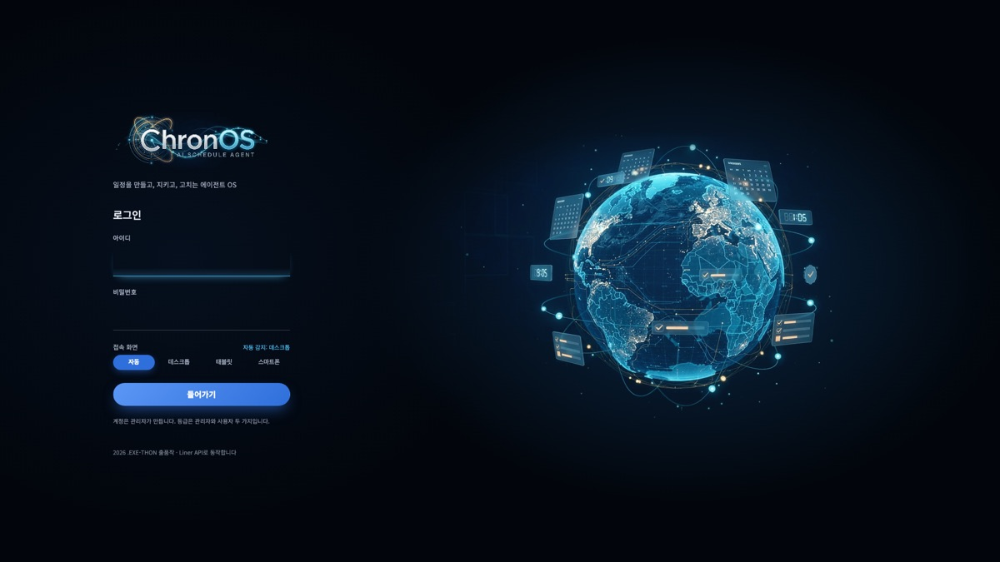
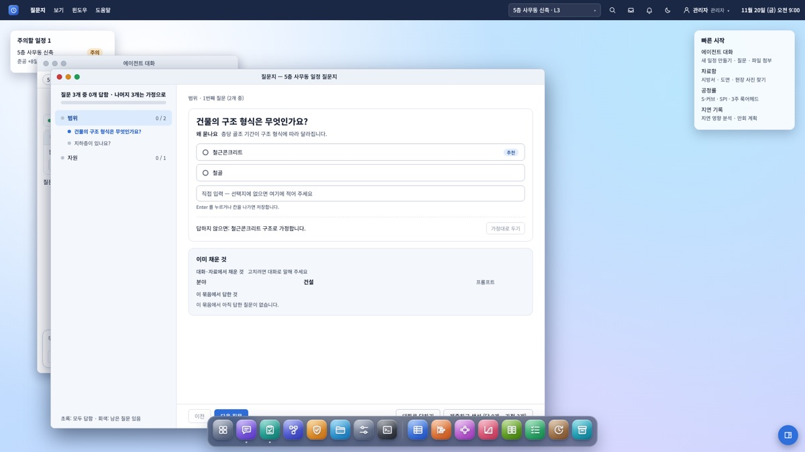
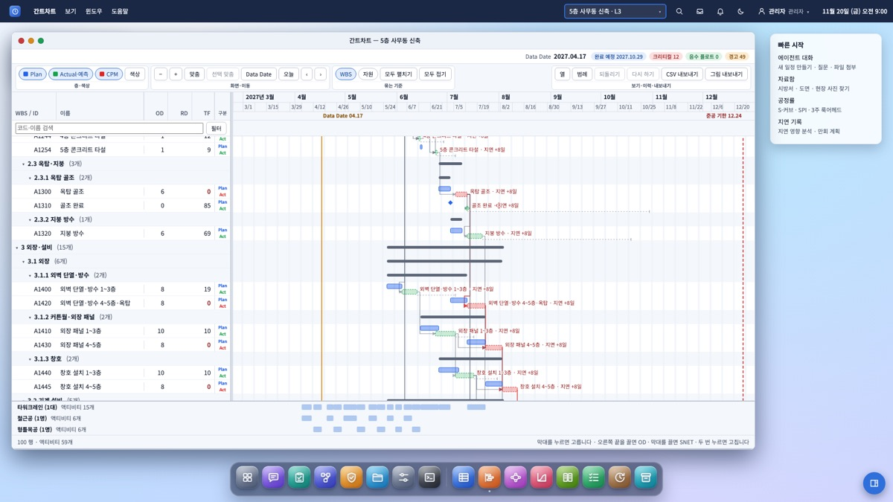
Chapter 4-2 · Working Software Proof (Plan 2)
"지상 골조가 비 때문에 3일 늦어졌어" 한 마디로 지연 영향이 코드로 계산되고, 만회안 A/B가 비교판에 나란히 뜨며, PM이 승인함에서 1클릭으로 확정하는 전체 변화 대응 흐름입니다.
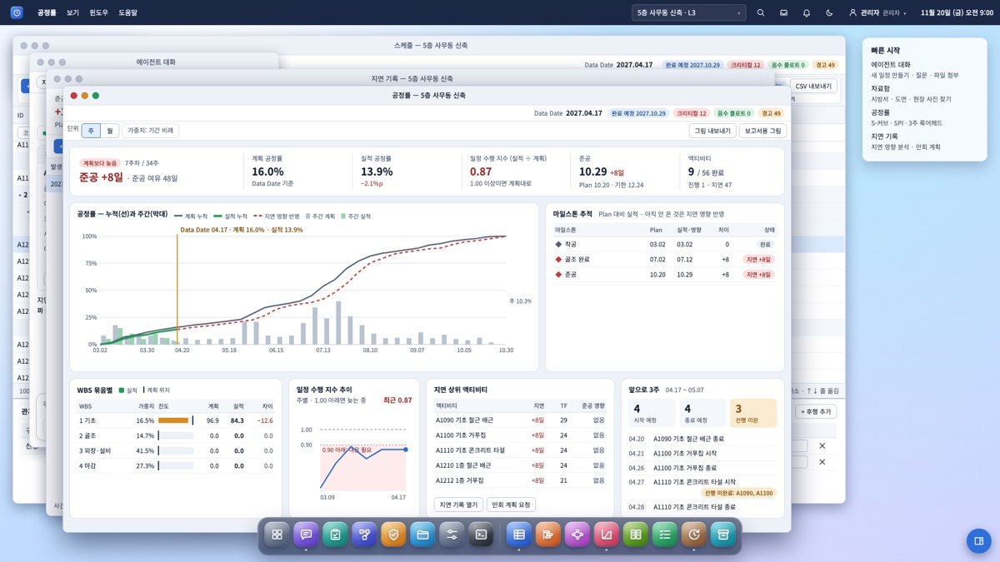
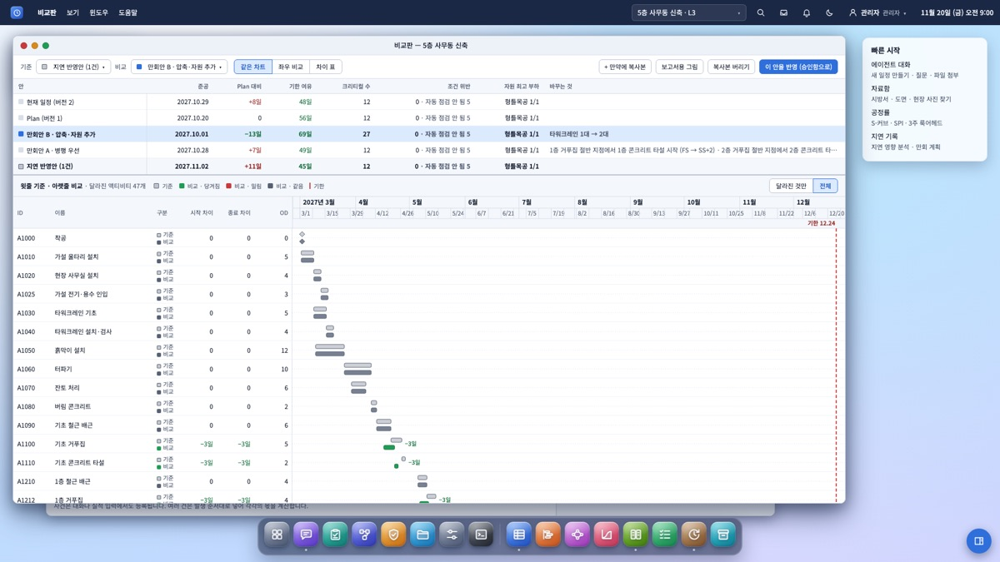
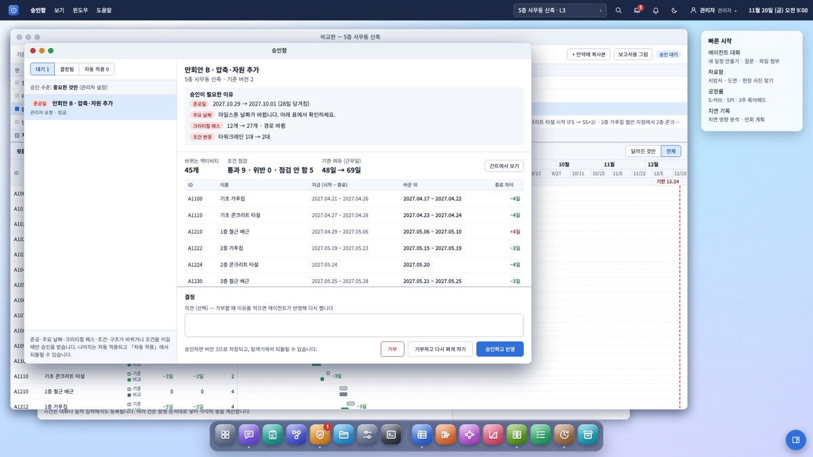
Chapter 4-3 · 자료함 & 3-디바이스 전용 셸
대화창에 파일을 붙이면 5축 자동 분류 + Qdrant 뜻 검색으로 쌓이고, 태블릿에서는 iPadOS형 좌우 분할 셸(TabletShell), 스마트폰에서는 390px 현장 앱(MobileShell)으로 자동 전환됩니다.
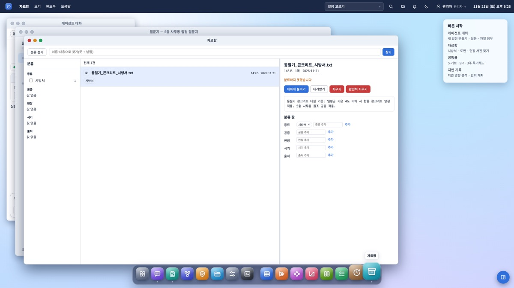
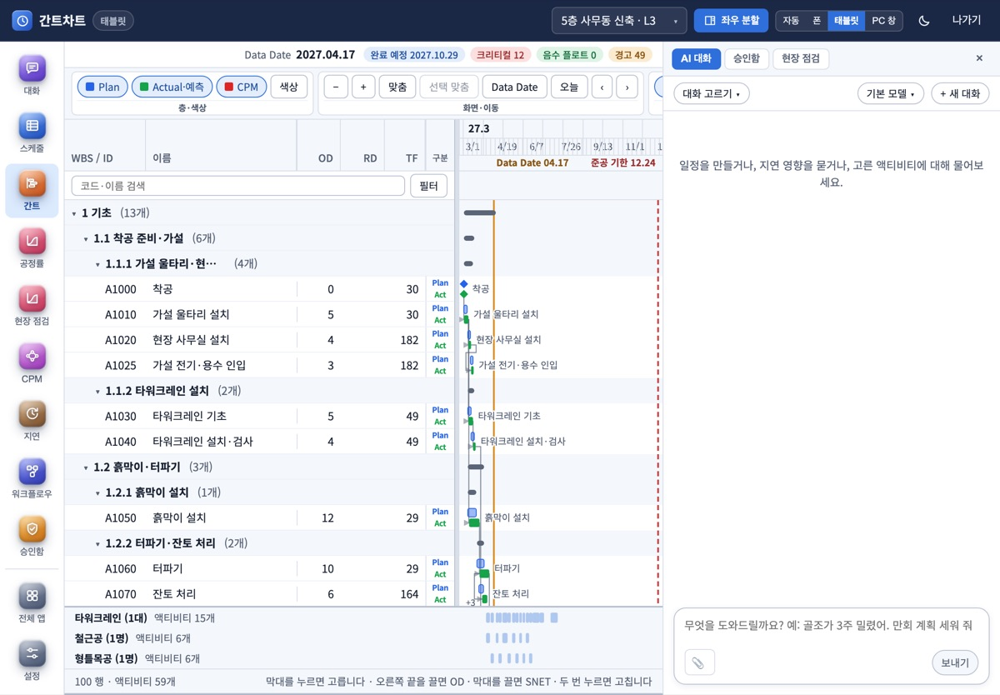
TabletShell 좌우 분할) — 왼쪽 76px 아이콘 레일 + 상단 명령 바 + 메인 간트와 오른쪽 AI 대화·승인·현장 점검 패널을 나란히 배치.기기·화면 크기를 자동 판별하고 로그인·상단 바에서 언제든 자동/폰/태블릿/PC 창 전환 가능. 모바일 화면은 390px 터치 최적화 적용.
5개 축(종류·공종·현장·시기·출처)은 고정하고 세부 값은 에이전트가 자료 증가에 맞춰 자동 확장합니다. Qdrant 벡터 뜻 검색 + 낱말 검색을 결합합니다.
엑셀/CSV 첨부 시 공정표 여부를 자동 감지해 먼저 확인받고, 빈 칸은 에이전트가 질문지/추정으로 채워 승인함을 거쳐 일정으로 가져옵니다.
설정 화면에서 기상청 API 키를 연결하면 단기예보·종관기상관측(ASOS)을 직접 조회해 동절기 타설·우천 지연 가정의 객관적 근거로 첨부합니다.
Chapter 4-4 · 현장 모바일 협업 허브 (FieldHub)
공정표가 현장에서 겉도는 가장 큰 이유는 사무실과 현장이 따로 돌기 때문입니다. ChronOS는 일일 체크인 · 사진 AI 판독 · 만회안 의견 조회 · D-3 핸드오프 4가지 현장 협업 흐름을 PC·태블릿·스마트폰에서 바로 돌립니다.
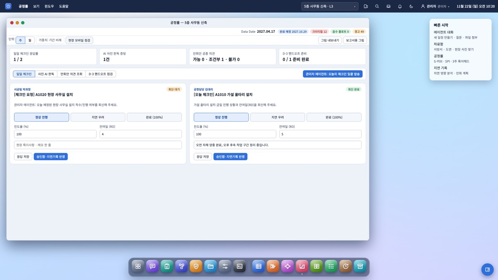
FieldHub) — 일일 체크인 응답률(1/2)·AI 사진 판독(1건)·만회안 공종 의견·D-3 핸드오프 요약 띠와 체크인 요청/회신 카드, 승인함·지연기록 상신 버튼.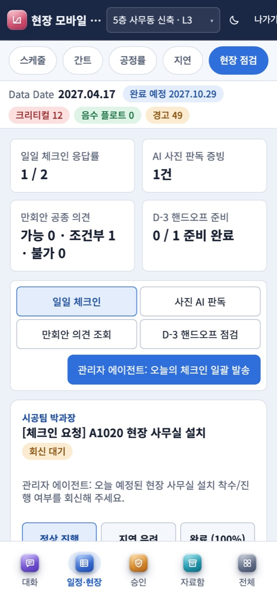
시공 담당자가 스마트폰에서 작업 상태, 진도율(%), 잔여일(RD), 메모 한 줄을 누르면 본사 FieldHub에 실시간 집계되고 승인함·지연기록으로 바로 넘어갑니다.
철근·거푸집, 커튼월 양중, 프레스 금형 세팅 사진을 올리면 AI가 진행 상태와 간섭 우려를 판독해 공정 증빙 기록으로 남깁니다.
본사가 세운 단축안을 골조·외장·설비 팀장에게 보내 수행 가능 / 조건부 가능 / 불가 회신을 받고, 불가·조건부 사유는 곧바로 「내 규칙」으로 상신합니다.
작업 시작 3일 전 4가지 필수 요건을 미리 점검해 미준비 항목이 있으면 곧바로 에이전트 대화창을 열어 선제 대안과 병행 일정을 검토합니다.
Chapter 4-5 · 실행 추적 · 스킬 학습 · 구현 현황
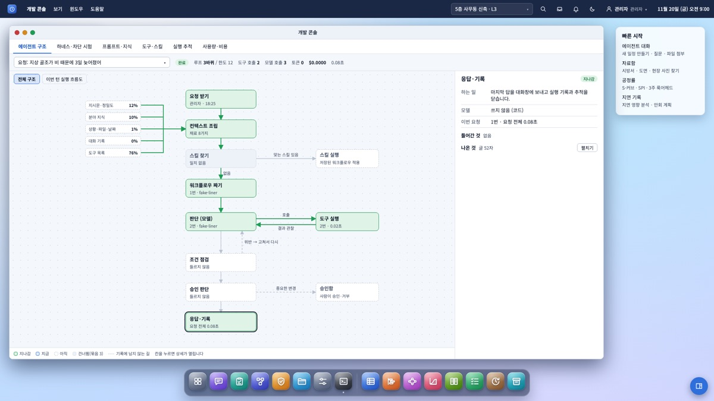
skill_matched)·토큰 비용을 SVG로 시각화.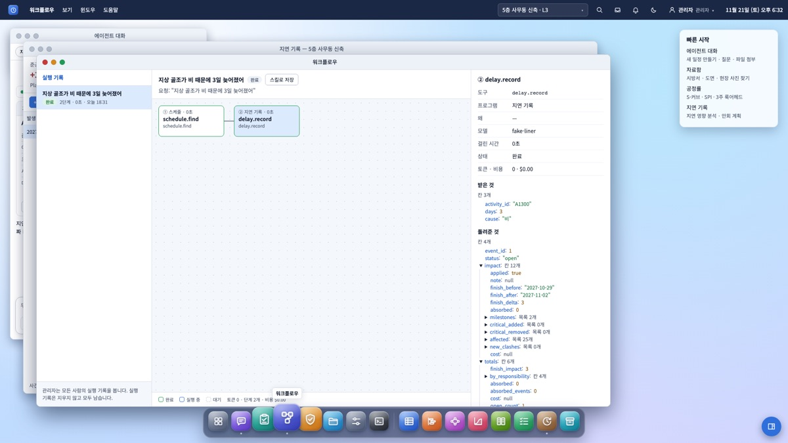
[스킬로 저장] & 자동 재실행 — 검증된 도구 실행 순서를 스킬로 저장하면 다음 유사 요청 시 자동 매칭되어 베테랑의 처리 절차를 그대로 재실행.| 영역 | 실제 구현 · 동작 완료 (커밋 및 자동 테스트 검증) | 향후 과제 (설계만 됨) |
|---|---|---|
| OS 셸 & 3-디바이스 | 황금비율 로그인(기기 선택기)·설정 8구역·Computer Use 스테이지 자동 전환 + iPadOS TabletShell(좌우 분할) + 스마트폰 MobileShell(390px 5탭바) |
— |
| 에이전트 & 개발 콘솔 | ReAct 12단계·컨텍스트 8종·30턴 압축·자가 점검(reflection)·6탭 개발 콘솔(하네스 8종 차단 시험·실시간 실행 설정·프롬프트/도구 원문 열람)·워크플로우 스킬 저장·재실행 |
— |
| 일정 생성·가져오기 | 2단계 적응형 인터뷰·범용 도메인 동적 합성(전 산업 지원)·Work Package 그룹핑·문제 ID 지목 정밀 수리(최대 5회)·L1~L5·엑셀/CSV 자동 가져오기 | P6 XER · MS Project(.mpp) 직접 변환 |
| 엔진 & 4겹 하네스 | 고속 근무 달력(공휴일·금지기간)·CPM(FS/SS/FF/SF)·자원 맞춤·4겹 하네스·지연 영향·다단계 단축안 탐색·공정률/S-커브/3주 룩어헤드·버전/롤백 | — |
| 현장 협업 · 자료함 | 현장 협업 허브 4종(FieldHub: 일일 체크인·사진 AI 판독·만회안 의견·D-3 핸드오프)·5축 자료함(Qdrant)·대화별 모델 ▾·기상청·Liner 5종 API 전체 연동 |
스캔 PDF OCR, 팀/사용자별 열람 권한 분리 |
| 자동 테스트 검증 | 백엔드 pytest 2,116건 전부 통과 · 프론트 vitest 1,177/1,179건 통과(2건 실패: 로그인·간트 대비) · Playwright E2E 4종 구축 · check_secrets 통과 |
— |
Chapter 4-6 · 하네스 통제실 & 개인화 설정
AI가 규칙을 지키는지 말로만 믿을 수 없습니다. 개발 콘솔을 6개 탭으로 확장해 하네스 8종을 버튼 하나로 직접 시험하고, 에이전트 실행 한도를 화면에서 바로 바꾸며, 실제 프롬프트·도구 원문까지 투명하게 열어 두었습니다.
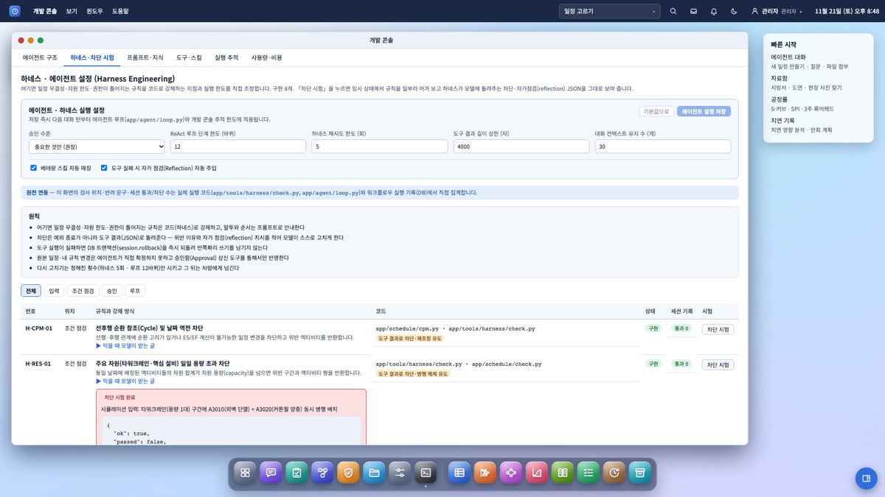
[차단 시험]을 누르면 타워크레인 용량 초과 차단 JSON을 즉석에서 검증합니다.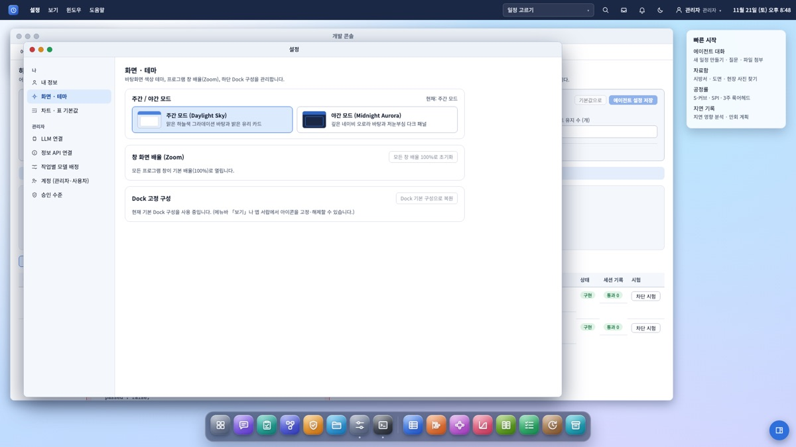
| 조건 하네스 | 차단 내용 (즉석 시험 · 위반 반환) | 통제 하네스 | 강제 방식 (실행 안전장치) |
|---|---|---|---|
| H-CPM-01 | 선후행 순환 참조(Cycle) 및 날짜 역전 차단 | H-APP-01 | 승인 전 원본 일정·시나리오·내 규칙 수정 격리 |
| H-RES-01 | 타워크레인·핵심 설비 일일 용량 초과 차단 | H-LOOP-01 | 도구 실패 시 DB 즉시 롤백 + 자가 점검 JSON 주입 |
| H-CAL-01 | 동절기·금지 기간 꼬리표 작업 침범 차단 | H-LIM-01 | ReAct 단계 한도(바퀴) · 하네스 재시도 한도 강제 |
| H-FIN-01 | 프로젝트 준공 기한 및 마일스톤 초과 차단 | H-IN-01 | 도구 출력 4,000자 절단 및 API 비밀키 추적 차단 |
임시 상태에서 규칙을 일부러 어겨 보고, 모델이 실제로 받는 차단·자가점검 JSON 응답을 관리자 눈앞에서 확인합니다.
승인 수준, ReAct 바퀴 수(4~24), 재시도 한도(1~10), 스킬 매칭·자가 점검 ON/OFF를 화면에서 바꿔 바로 반영합니다.
사본이 아니라 백엔드가 실제로 읽는 system.md, 동적 가이드, 도메인 YAML, 도구 스키마와 저장된 스킬을 그대로 봅니다.
Chapter 5-1 · Liner 5종 API 연동 흐름
ChronOS는 판단(Model/Router) · 조사(Search) · 법규/납기(MCP) · 기억(Embeddings) · 보고(Visualization) 다섯 축 모두를 Liner API로 통합했습니다. 현장에서 "지상 골조 비로 3일 지연" 1건이 접수될 때 5종 API가 어떻게 맞물려 돌아가는지 보여줍니다.
liner-mark + 전문 도메인 MCP(법령·기업) + 시각화 + 임베딩을 모두 호출할 수 있었기에, 1인 개발로도 1주일 만에 현장에서 바로 쓸 수 있는 멀티모달 일정 OS를 완성할 수 있었습니다.
Chapter 5-2 · Routing Strategy & Real Verification
모든 요청에 최고가 모델을 쓰지 않습니다. ChronOS는 설정 화면에서 6개 쓰임새별 모델·라우팅 전략을 관리하며, 대화창 머리 모델 ▾으로 세션별 실시간 교체도 지원합니다.
backend/app/llm/assignments.py)| 쓰임새 | 기본 모델 · 라우팅 전략 | 호출 위치 및 역할 | 비용·안전 설계 |
|---|---|---|---|
| light | liner-claude-router · cost | 요청 조건 추출(extract_conditions), 범용 도메인 합성(domain_synth), 5축 자료 분류·요약 |
고속·저비용 처리 |
| normal | liner-claude-router · balanced | 메인 에이전트 ReAct 대화 루프(agent/loop.py), 도구 선택 |
세션별 모델 ▾ 변경 |
| hard | liner-claude-router · quality | 일정 WBS·초안 생성, 위반 고침(최대 5회), 만회안 설명·추천 | strict JSON 스키마 강제 |
| longdoc | liner-mark (1,050,000 tok) | 장문 시방서·회의록·대규모 공정 데이터 통독 전용 슬롯 | 100만 토큰 맥락 유지 |
| vision | 비전 지원 모델 (설정 선택) | 현장 사진 첨부 시 자동 전환(base64 5MiB 초과 시 1568px 축소) | 4xx 시 텍스트 폴백 |
| embedding | openai/text-embedding-3-small | 5축 자료함 Qdrant 벡터 색인 및 뜻 검색 | 무중단 백그라운드 재색인 |
docs/dev-journal/2026-11.md)| API 종류 | 실측 결과 | 확인된 기술 사양 및 안전장치 |
|---|---|---|
| Model & Router API | 22/22 · 200 OK | Chat Completions 도구 호출, strict JSON 스키마, cost/balanced/quality 전략별 라우팅, usage.cost 청구액 자동 기록(llm_calls 테이블) |
| Search API | 200 OK | /tools/search/web, /scholar x-api-key 인증 검증. 결과 URL·호스트명·발행일을 근거 DB에 보관하고 조건 출처 링크로 연결 |
| Liner MCP | 5/5 · 200 OK | Streamable HTTP initialize · tools/list · search_legal · search_business 전수 성공(응답 ~2초). 법령·납기 근거 조회 및 20초 타임아웃 보호 |
| Visualization API | 2/2 · 15/15 일치 | 약 11초 내 68KB 인터랙티브 Chart.js HTML 생성. visual_check.py가 보이는 표·차트 데이터 숫자 15/15 전수 대조 + iframe CSP 샌드박스 적용 |
| Embeddings API | 1536d · 1.1초 | /models 733개 중 임베딩 35개 필터링, 3-small 1536차원 실측(1.1초, $0.02 / 1M 토큰). prices.yaml에 단가 반영 |
| (연계) 기상청 API | 2/2 · 200 OK | 단기예보(1,016행) + ASOS 종관기상관측(62개 항목) 실측 완료. Liner API 근거와 함께 동절기·우천 일정 가정의 객관적 근거로 결합 |
Chapter 6-1 · Cross-Industry Scalability
ChronOS는 건설·생산처럼 깊은 기준이 필요한 분야는 전용 YAML 분야 팩으로, 그 밖의 R&D·인허가·자재 조달·SW·마케팅 등은 요청을 받는 즉시 동적 도메인 합성(domain_synth.py)이 규칙·자원·WBS를 즉석에서 만들어 바로 실행합니다.
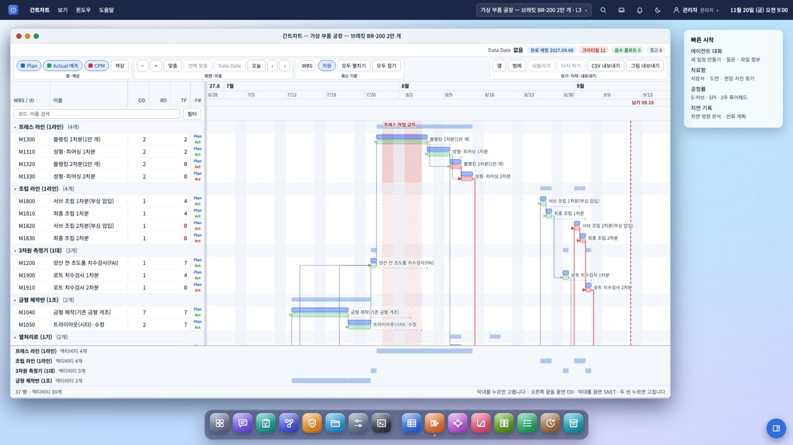
건설(5층 사무동)과 생산(BR-200) 전용 팩에 더해, R&D·인허가·조달·SW·행사 등 어떤 분야든 거절 없이 즉석 도메인 합성(0307534)으로 일정을 생성합니다.
OS 셸과 프로그램 매니페스트 구조가 모듈화되어 있어, 일정 프로그램 옆에 원가(EVM)·품질(검측)·안전(위험성평가) 프로그램을 앱처럼 추가할 수 있습니다.
수백만 원대 라이선스와 전문 플래너가 필요한 P6를 못 쓰는 중소 현장도, 대화 한 줄과 엑셀 업로드만으로 P6 수준의 CPM·자원 맞춤·승인 통제를 바로 쓸 수 있습니다.
베테랑 PM이 등록한 「내 규칙」(4겹 하네스)과 「워크플로우 스킬」이 쌓일수록, 신입 담당자도 베테랑과 같은 기준과 순서로 지연에 대응할 수 있습니다.
Chapter 6-2 · End-to-End Efficiency Scenario
오전 9시, 우천으로 지상 골조가 3일 밀린 상황을 현장 캐릭터 시나리오와 실제 ChronOS 구동 화면으로 나란히 추적합니다.
MobileShell 1분 체크인·사진 AI 판독 전송 → Vision 파악 + 코드가 준공 +3일(11.02)·크레인 겹침 즉시 계산.
3시간 → 10초 (99%↓)
FieldHub 공종 의견 회신과 5축 자료함·MCP 근거를 한 화면에서 확인하고 승인함 1클릭으로 버전 3 확정.
반나절 협의 → 10분 (95%↓)
[스킬로 저장]. 다음 유사 지연 시 자동 매칭되어 신입도 베테랑 순서대로 처리.
반복 학습 → 1클릭 재실행
Chapter 6-3 · Quantitative Impact
현장에서 매주 반복되는 4대 핵심 업무를 기준으로 Before와 After를 비교했습니다. 단순 계산 시간을 줄이는 것을 넘어, PM이 발주처 협상·리스크 예방·현장 안전 같은 본질적 의사결정에 집중할 시간을 돌려줍니다.
| 반복 업무 | 기존 방식 | ChronOS 적용 후 | 기대 효과 |
|---|---|---|---|
| 지연 만회 계획 수립 | 반나절 ~ 밤샘 | 대화 한 줄 → 만회안 1초대 탐색 + 비교판 즉시 비교 | 30분 이내 결정 |
| 조건·자원 시뮬레이션 | 수작업 재작성 | 조건 창 값 변경 즉시 간트 점선 미리보기 | 1초 미만 확인 |
| 협력사 공정표 취합 | 건당 2~3시간 | 엑셀/CSV 첨부 → 자동 감지 → 빈 칸 질문지/추정 | 20분 이내 완료 |
| 회의록·시방서·근거 | 매주 2시간+ | 5축 자료함 뜻+낱말 검색 + 법규·날씨 출처 자동 첨부 | 20분 이내 반영 |
공정 담당 1인 기준 연간 약 300~400시간의 단순 재계산·문서 취합 시간을 회수합니다.
대형 플랜트에서 하루 지연은 수천만~수억 원의 손실입니다. 당일 즉시 만회안을 결정해 공기 지연을 조기 차단합니다.
단순 분류는 cost, 대화는 balanced, 핵심 판단만 quality로 배정하고 30턴 요약 압축으로 운영비를 최소화했습니다.
Chapter 7 · Author, Engineering Quality & Compliance
• SK온 대전 파일럿 플랜트 (4,200억 원) PM 총괄
• 쿠웨이트 NWC 프로젝트 (3,000억 원) Part Leader
• UAE RRE#2 프로젝트 (3조 원) 배관 엔지니어 · 사우디 SRU TA (2,000억 원) 기계 담당
15년간 현장에서 매일 공정표로 의사결정한 경험을 코드·하네스·에이전트 OS로 직접 구현했습니다.
| 규정 조항 | 준수 내용 및 객관적 증빙 |
|---|---|
| 제4조 1항 Liner API 핵심 활용 |
Liner 5종 API(Model/Router · Search · MCP · Visualization · Embeddings)를 단순 부가 기능이 아닌 핵심 기능 전체에 직접 연결하고 전수 실측 완료. |
| 제4조 2항 기간 내 신규 개발 (신청서 대비 진화) |
참가 신청 시 기존 프로젝트 위 15% 확장 계획에서 전환하여, 대회 취지("베테랑의 노하우를 실행하는 에이전트")에 직접 답하기 위해 2026년 11월 19일부터 새 저장소(sohnjangho/chronos)에서 100% 처음부터 신규 설계·구현했습니다. 기존 코드 복사 없음(Git 커밋 이력이 객관적 근거). |
| 제4조 3항 참가자 직접 개발 |
개인 참가자 본인(손장호)이 전체 기획·설계·검증을 주도하고, 허용된 AI 코딩 도구(Claude Code · Antigravity)를 활용해 구현했습니다. |
| 제4조 6항 보안 및 API 키 보호 |
API 키는 화면 설정에서만 입력받아 서버 DB에 Fernet 암호화 저장(응답에는 끝 4자리만 노출). 전체 Git 커밋 이력 비밀 검사(scripts/check_secrets.sh) 100% 통과. |
| 제5조 1·2항 가상 데이터 사용 |
시연 일정 2종(「5층 사무동 신축」, 「가상 부품 공장 — 브래킷 BR-200 2만 개」), 계정(demo-admin), 예시 시방서·사진·엑셀 공정표 모두 100% 가상 데이터만 사용했습니다. |
• 백엔드 pytest 2,116건 전부 통과
• 프론트 vitest 1,177/1,179건 통과 (2건 실패: 로그인 텍스트·간트 대비)
• Playwright E2E 4종 구축 · check_secrets 비밀 검사 0건 통과
• GitHub: https://github.com/sohnjangho/chronos
• 소스코드 압축: git archive (.env·data 제외)
• 데모 영상: 5분 이내 FHD 시연 (YouTube 일부 공개)